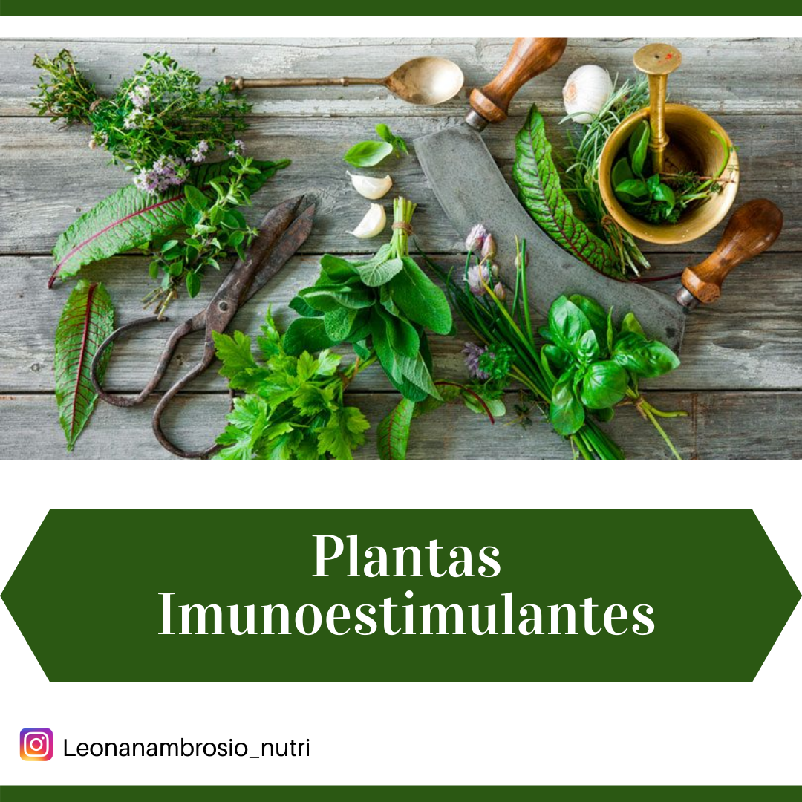
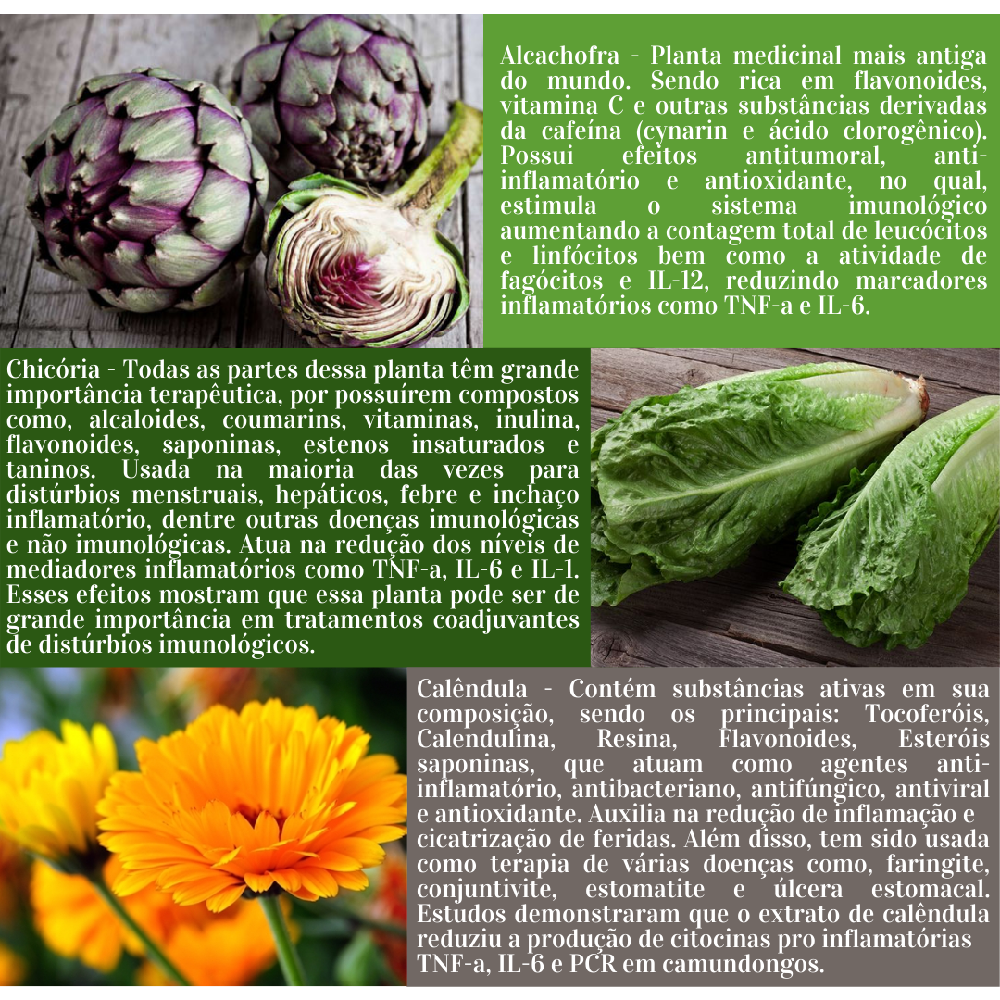
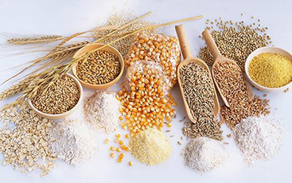

Plantas Imunoestilulantes
2 de julho de 2024 Os efeitos terapêuticos dos fitoterápicos se dá pela presença de componentes ativos na composição de diversas plantas medicinais. Essas plantas vêm sendo usadas a milhares de anos como tratamento primário de doenças. Estudos recentes têm mostrado os efeitos positivos de plantas no sistema imunológico, sendo essas, as plantas da família Asteraceae (Compositae), como por exemplo: Alcachofra, Chicória, Calêndula, Bardana e Tanaceto. Essas plantas auxiliam na produção de metabolitos secundários como flavonoides e terpenoides que exercem efeitos moduladores na imunidade aumentando a eficiência das células de defesa.
Leia maisAlcachofra - Chicória - Calêndula
2 de julho de 2024 - Alcachofra: A alcachofra é a planta medicinal mais antiga do mundo. Sendo rica em flavonoides, vitamina C e outras substâncias derivadas da cafeína (cynarin e ácido clorogênico). Possui efeitos antitumoral, anti-inflamatório, antioxidante, no qual, estimula o sistema imunológico aumentando a contagem total de leucócitos e linfócitos bem como a atividade de fagócitos e IL-12, reduzindo marcadores inflamatórios como TNF-a e IL-6. - Chicória: A chicória é uma erva glandular distribuída por grande parte da Europa e Ásia. Todas as partes dessa planta têm grande importância terapêutica, por possuírem compostos como, alcaloides, coumarins, vitaminas, inulina, flavonoides, saponinas, estenos insaturados e taninos. Usada na maioria das vezes para distúrbios menstruais, hepáticos, febre e inchaço inflamatório, dentre outras doenças imunológicas e não imunológicas. Atua na redução dos níveis de mediadores inflamatórios como TNF-a, IL-6 e IL-1. Esses efeitos mostram que essa planta pode ser de grande importância em tratamentos coadjuvantes de distúrbios imunológicos. - Calêndula: Calêndula tem sua proliferação em diversos tipos de solos de vários países. Contendo substâncias ativas em sua composição, sendo os principais, tocoferóis, calendulina, resina, flavonoides, esteróis saponinas, que atuam como agentes anti-inflamatório, antibacteriano, antifúngico, antiviral e antioxidante. Auxilia na redução de inflamação e cicatrização de feridas. Além disso, tem sido usada como terapia de várias doenças como, faringite, conjuntivite, estomatite e úlcera estomacal. Estudos demonstraram que o extrato de calêndula reduziu a produção de citocinas pro inflamatórias TNF-a, IL-6 e PCR em camundongos.
Leia maisBenefícios das Fibras
2 de julho de 2024  Nos dias atuais muito se fala sobre alimentação saudável. Parece ser algo fácil e sem mistérios, basta restringir alguns alimentos ricos em gorduras trans, açúcares e consumir frutas e verduras. Realmente são processos importante para manter uma alimentação saudável, mas até que ponto conseguimos levar essa restrição sem que se torne uma compulsão?
Para se ter uma relação saudável com a comida é muito importante controlar a qualidade e a quantidade dos alimentos que são adquiridos, assim como respeitar os horários de cada refeição e se manterem ativos.
Em períodos de estresse e ansiedade como o que estamos vivendo é comum ocorrer alterações nos hábitos alimentares das pessoas, como por exemplo episódios de compulsão alimentar, ou seja, pessoas que procuram uma forma de “prazer” nos alimentos (comedores emocionais), no qual, acabam muitas vezes optando por alimento com alto teor calórico e reduzidos em fibras, vitaminas e minerais, que posteriormente trará prejuízos aos objetivos estéticos e a saúde dessas pessoas.
Existem algumas estratégias nutricionais que ajudam a manejar de forma eficiente essas compulsões, uma delas é fazer um consumo adequado de alimentos ricos em fibras, pois esse nutriente apesar de ser um carboidrato, não sofre digestão e absorção no intestino delgado, logo não altera as calorias consumidas promovendo saciedade.
Além disso, a fibra é considerada um alimento funcional, e seu consumo adequado proporciona vários outros benefícios a saúde como por exemplo:
- Redução do colesterol
- Previne constipação
- Redução do risco de diabetes tipo 2 e controle glicêmico.
- Redução do risco de doenças cardiovasculares.
Lembre-se também de fazer uma ingestão hídrica adequada durante o dia.